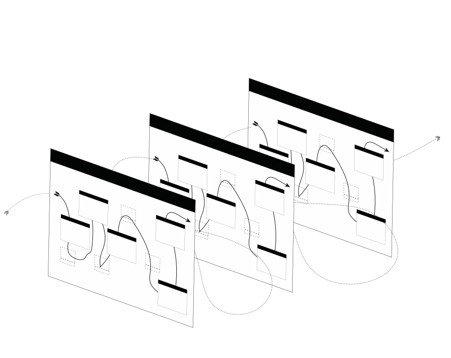

Introduction

All labor follows a story. Consciously or not, we work according to a narrative that describes what we do, why we do it, and what it accomplishes. In a conventional narrative, there are two different kinds of labor — direct actions that must be done, and the effort to figure out which direct actions to take.
In this narrative, actions that apply directly to the stated goal are the only legitimate form of labor. If a task takes longer to understand than to accomplish, we will often lament how much time we wasted getting to the “real work.” If our labor were a maze, “real work” is the path that takes you to the exit — the actions that move the plot forward.
Of course, we don’t always encounter mazes knowing which path is the right one. There is tension between the “real work” and whatever it is we have to do when we don’t know what we have to do. Walking the right path to the exit is certainly different work than figuring out which path is the right one, but we need to do both at once to succeed.
However real or fraudulent our labor may feel, we define it by what we can understand of it. A maze looks very different once we’ve made it through. When we look back on a task that took surprising turns, we can see how our idea of the right path or the real work changed as we labored and learned. We cannot describe this whole process of doing and understanding work with a conventional narrative in which real work leads to a desired outcome. The experience of finding our way through a maze for the first time requires a distinct type of labor. We will call this conceptual labor.
In everyday terms, we can define conceptual labor as:
Labor that integrates direct work with the efforts to define the narrative of work and how it should be done.
Conceptual labor is too complex to follow step-by-step instructions to a known outcome, so we cannot approach it with a single narrative in mind. It is better understood through a model. A narrative describes what happened or will happen by combining nouns (people, ideas, materials) with verbs (actions, decisions, transformations) in a setting (a place, an assignment, a mechanism). A model is a dynamic representation of everything we know about the nouns, verbs, and settings that concern us. We say it is dynamic because all the possible properties and effects of these components are significant within a model, and so are the relationships between them. A model captures what could happen, what something appears to be, or what conditions might matter. In this way, we can produce multiple narratives from a model by suggesting or deciding on definitions of the nouns, verbs, and settings that are significant to our labor. So when we have to model our work in the absence of a reliable narrative, the idea of real work loses its usefulness and meaning.
By simulating the interactions between ideas, material reality, and social conditions, models can quickly become so complex we cannot predict their behavior. The mental effort to construct these models, usefully manipulate them, and understand their behavior is fundamentally different than simply trying to figure out the right thing to do. This type of labor cannot be fully separated from the direct work being done, yet it maintains so many potential approaches that it cannot be described within a single narrative, let alone the conventional narrative.
In these terms, conceptual labor is defined as:
The process of working when the fundamental components of a model of labor can change themselves and each other.
To talk usefully about the potential paths and results of this conceptual labor, we must be able to talk in detail about models and their fundamental components. Whatever specific circumstance in which conceptual labor is done, it is always done through a model. A meaningfully thorough description of the fundamental processes of working through models would offer a general theory of conceptual labor, separate from the language or conventions of any particular discipline. This is what the Theory of Conceptual Labor intends to present.
To this end, The Theory identifies seven related Tenets that reflect essential conditions of conceptual labor, regardless of how it is done or what form it takes. The Tenets imply core concepts that fall into four different groups based on the qualities of conceptual labor that they address. The concepts of Tenets 1 and 2 describe the nature of modeling work. Tenets 3 and 4 address the way in which the conventional narrative competes with the process of conceptual labor. Tenets 5 and 6 address the transient nature of work. Tenet 7 describes how conceptual labor produces and follows patterns of working.
A short summary of the Theory follows this introduction, preceding the core text of the Theory. The glossary contains all the special terms used here and in the Theory.
The section Why We Need a Theory of Conceptual Labor presents various arguments for why a general theory of conceptual labor is necessary and relevant, providing more examples based in real-world experience. In addition, it briefly surveys the existing language from various disciplines to describe what we are calling conceptual labor.
The section How To Use The Theory of Conceptual Labor outlines basic methods by which this theory can provide abstract mental tools to support the many ways in which specific conceptual labor is done in the mind and the physical world. It contains a demonstration of how to use the special terms of the Theory to represent and analyze a simple, real-world example of conceptual labor.
The final section, The Expanded Theory explains the Tenets and Core Concepts in detail, first in abstract terms and then again through case studies for each of the four groups.